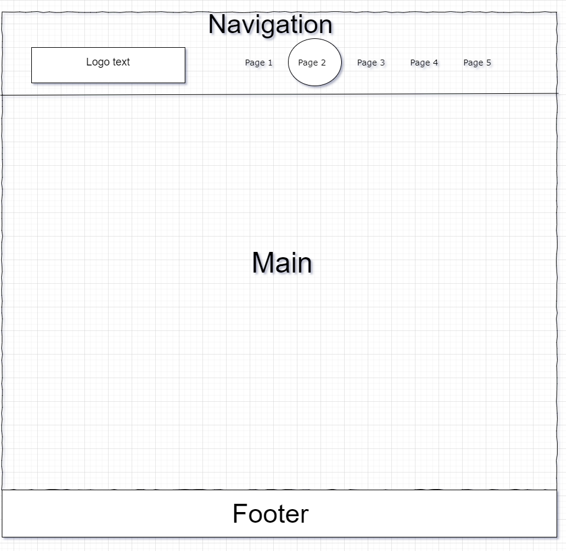
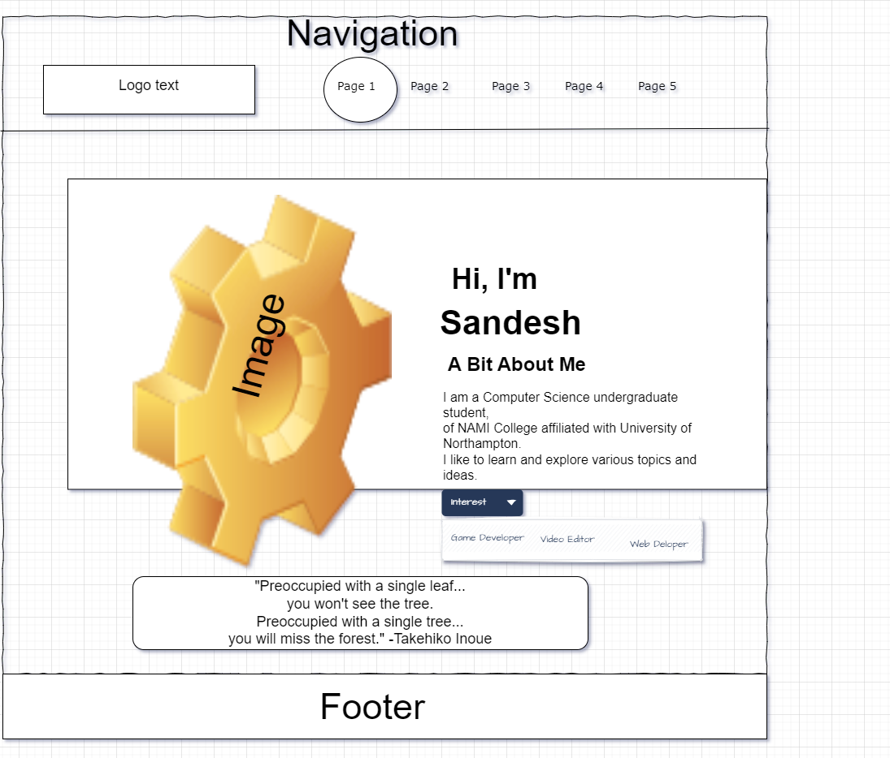
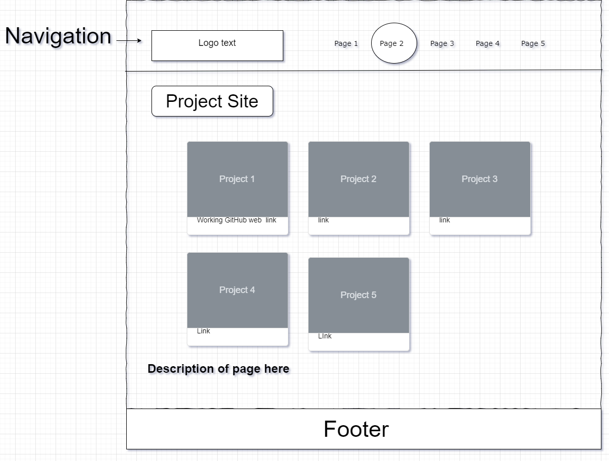
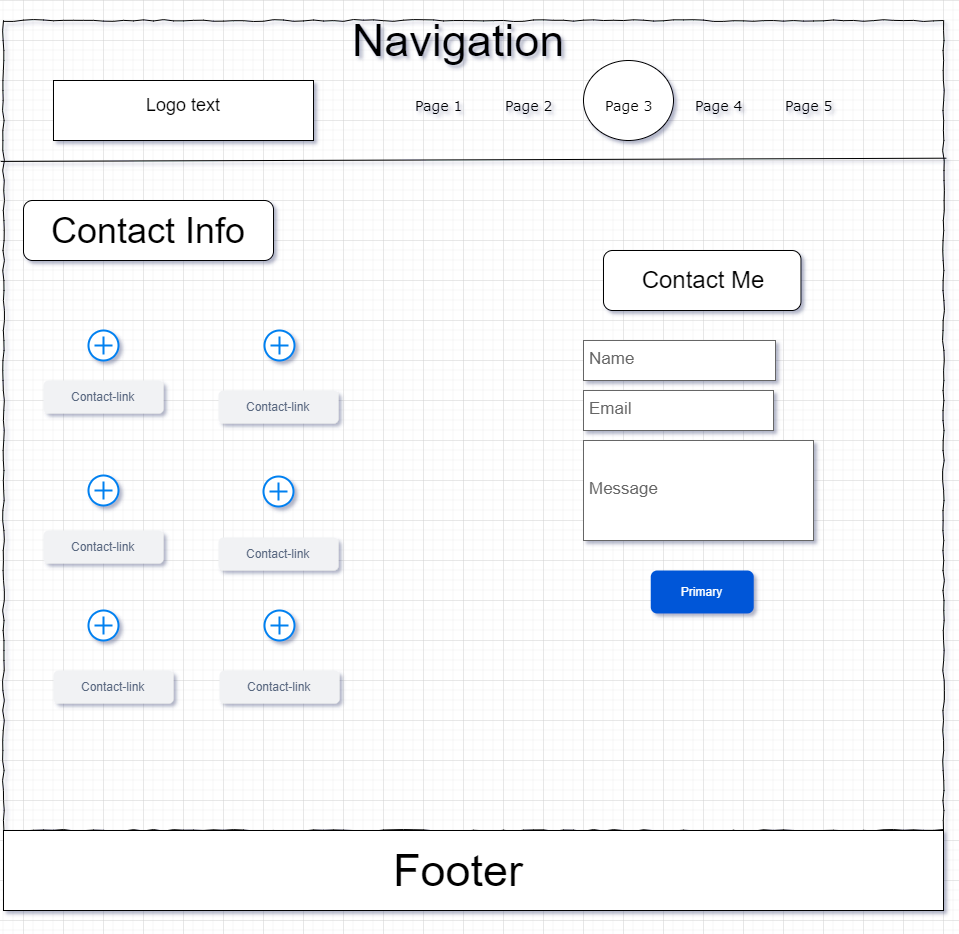
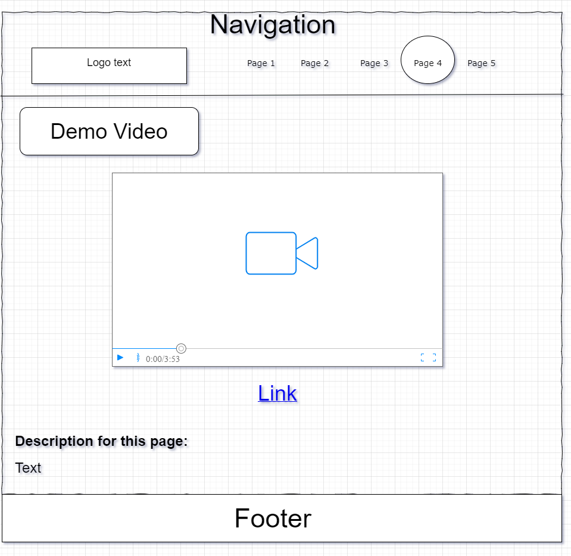
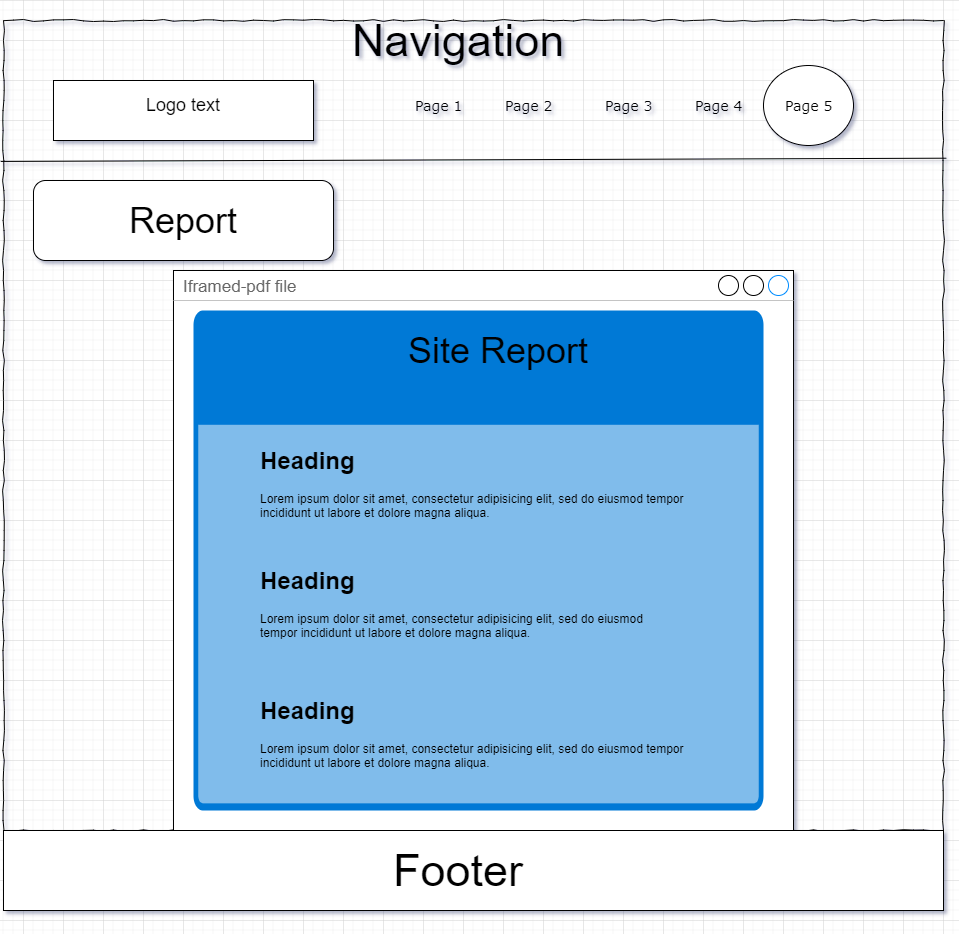

Site Report: Sandesh's Portfolio Website
1. Project Overview
This portfolio website is well-structured and visually appealing, designed to showcase the skills and understanding of Sandesh Thapa. This report analyzes the design, functionality, user experience, responsiveness, and development experience of the website.
i. Home page
The Index page is the main entry point for the website. It contains a brief introduction
ii. Project page
This page contains of all the projects
iii. Contact page
iv. Video Demonstration page
The Video Demonstration page pro
v. Site Report page
The Site Report Page provides a detailed analysis and documentation of the portfolio website, focusing on topics such as design decisions, website responsiveness, and the development process.
2. Design
The site features a very clean and modern design with color schemes that feels very commfy and welcoming an easy to use. The page layout and navigation through the pages are also done with user intution in mind ensuring easy navigation. For the color theme, coffee and similar pastel color have been used to represent personal brand. The color theme and website design are kept consistent throughout all the apages for more cohesive look. Simple and easy to understand icons have also been used for the user to easily understand the meaning of that icon. To pop out some of the elements, some elements use different colors which isb also used to highlight some of the element. But these pop out colors won't effect the site and its form and cohesive nature in any negative way.3. Functionality
The website consists of various interactive elements such as buttons, links and forms, which are functional and user friendly. Through the contact form the user can directly get into contact which is sinple and easy to use. The projects in Project page consists of various projects, which on click will direct the user to the github repository of that project. In the github repository the user can easily understand the project though read me file. The navigation menu will also highlight the page which the user is currently on and which the user wants to press for easy page navigation and more interractiveness. And for when the user sees the website in mobile view, a navigation bar will be there, which when pressed will show the menu to navigate pages. To achive this a simple java script is used to trigger the display property.5. Responsiveness
Mobile Compatibility: The site adapts well to various device sizes, maintaining functionality on mobile devices. Interactive elements are optimized for touchscreens, ensuring consistent usability across different devices.Regular Testing: Various tests were conducted on different devices using inspect element to ensure responsiveness. Any issues identified were promptly addressed to ensure smooth operation across all devices.6. Performance
The site operates efficiently with minimal delay, thanks to its lightweight design, ensuring smooth performance across all tested browsers on both PC and mobile platforms (Opera GX, Microsoft Edge, Chrome, Safari, Firefox). The use of lightweight images maintains website quality without compromising load times. Some of the imagiry were edited to lower the size of them using software called GIMP without effecting the quality of the image much. Users can navigate between pages seamlessly with minimal delays. Additionally, videos are linked externally to maintain optimal site performance.4. User Experience
The intuitive menu design is intended for makes users to find site. easily on page. Incase of missing file of images, an alternative text is implemented to show an error free page. All of the content in the site is also made easy to read and has a cohesive pattern. The faster load time of the website prevents user dissatisfaction and ensures a smooth browsing experience. The user can easily use the webiste, regardless of the device and application. The website has been made engaging, accessible and intitive for a great and positive user experience without losing functionlaity and usability.7. Areas for Improvement
Asa simple and modern looking website, there can be alot of improvement done for this site with addition of various functionality and optimization:
- Dark mode: The current website has only one color theme which might not be preferred by all the users. So for all the people who preferred the more modern look of dark mode. The website could consist of a dark or light mode toggle for the user to choose according to their preference, which wont effect their content viewing expreienving
- Content Optimization: The site can definitely contain more information that are relevant to the site. And also more usage of visual hiearchy for those content such as font sizes, weight and colors for improving engagement and readability.
- Interractive elements: The site can definitely benefit from addtion of more interractive elements such as effects and animations of elements without being overwhelming and irrelevant. And buttons such as read more, to show more information about a certain topci within the site, if the user wants to know more.
8. Web Development
The
- Web development Process
Wireframes that were used for the development process.
      - Coding:
- Debugging process:
- Problem Solving:
- Development Experience:
9. Module Experience
10. Page Validation
The Html and css file for the site have also been validated. This is done to ensure the code quality, cross-browser Compatibility, future proofing, credibility, debigging and troubleshooting. Here are the Validation screenshot done for this website:
i. HTML Validation
For the validation of the hmtl pages https://validator.w3.org has been used, as recommended by the module teacher.


ii. CSS Validation
For the validation of the Css file https://jigsaw.w3.org/css-validator/ has been used, as recommended by the module teacher.

11. Video Demonstration URL
Here is the video to showcase the website
12. Conclusion
[Your Name]'s portfolio website is a well-crafted showcase of your work, offering a positive user experience. By addressing the areas for improvement noted in this report, you can further enhance your site's effectiveness and appeal to potential clients or employers.